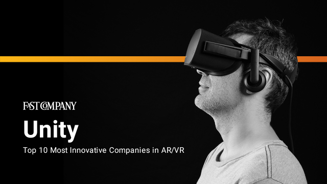
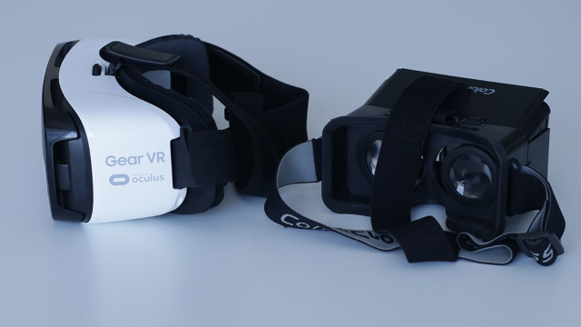
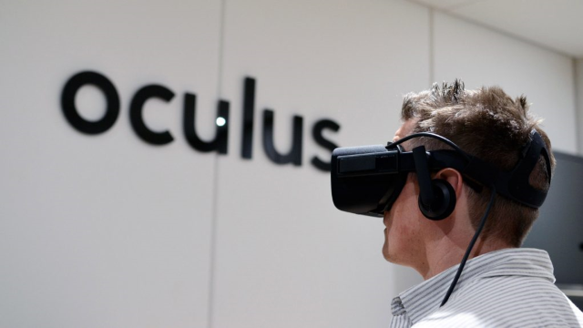

<body>

	<section class="main-container">
		<div class="row">
			<h2>Blog</h2>
			<div class="col col-6">
				
				<h3>OFast Company lists Unity as #4 Most Innovative VR/AR Company</h3>
				<p>Joey op 6 mei 2019</p>
				<p>Unity is honored to be recognized by Fast Company as one of the top innovators in VR and AR. 
					We’ve been a long-standing champion for the VR/AR industry</p>
				<br>
				<a href="https://www.poppr.be/nl/blog/oculus-quest-review/" target="_blank" class="button square"> 
					click me to read the article
				</a>
			</div>
			<div class="col col-6">
				
				<h3>Oculus review</h3>
				<p>Joey op 6 mei 2019</p>
				<p>Oculus, eigendom van Facebook, lanceerde niet één maar twee nieuwe Virtual Reality setups: de Oculus
					Rift S,
					een nieuwe versie van de Oculus Rift, en de hoog geanticipeerde Oculus Quest.
					Wat maakt deze Quest zo speciaal? Neem een virtuele stoel en lees verder.</p>
				<br>
				<a href="https://blogs.unity3d.com/2018/02/21/fast-company-lists-unity-as-4-most-innovative-vr-ar-company" target="_blank" class="button square"> 
					click me to read the article
				</a>
			</div>
	</section>
	<section class="main-container">
		<div class="row">
			<div class="col col-6">
					
					<h3>Getting Started With VR
							Development
					</h3>
					<p>Joey op 6 mei 2019</p>
					<p>Virtual reality is here and it’s big. Your clients will want to have their own VR projects, so start embracing this new wave </p>
					<br>
					<a href="https://www.bornfight.com/blog/getting-started-with-vr-development/" target="_blank" class="button square"> 
						click me to read the article
					</a>
			</div>
			<div class="col col-6">
					
					<h3>Oculus Brings More Lifelike Sound Propagation to Audio </h3>
					<p>Joey op 6 mei 2019</p>
					<p>Now in beta, the so called ‘Audio Propagation’ tool comes in the Oculus Audio SDK 1.34 update which produces more accurate audio propagation with 
						“minimal set up,” the company says
					</p>
					<br>
					<a href="https://www.roadtovr.com/oculus-brings-lifelike-sound-propagation-audio-sdk-1-34/" target="_blank" class="button square"> 
						click me to read the article
					</a>
			</div>
		</div>
	</section>
</body>

</html>